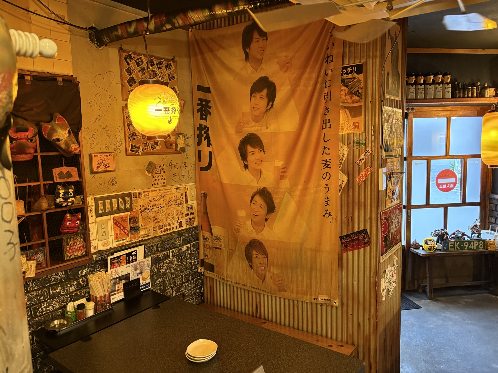

Space
昭和レトロな店内
気取らず、落ち着ける。料理と酒と会話がちょうどよく馴染む場所です。
Showa Retro
肩肘張らずに過ごせる空気
どこか懐かしい昭和の空気が残る店内。 料理をつまみながら、自然と会話が弾み、気づけばもう一杯。
初めての方にも、いつもの方にも。 松金には、気取らず過ごせる距離感があります。
Inside
路地裏の時間
入口をくぐると、鉄板の音と湯気、料理を待つ時間が自然に馴染んでいきます。


ほかのページも見る